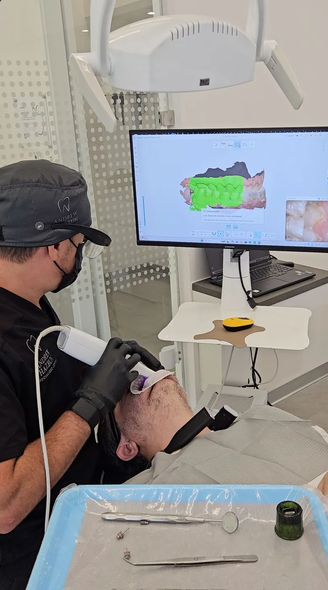
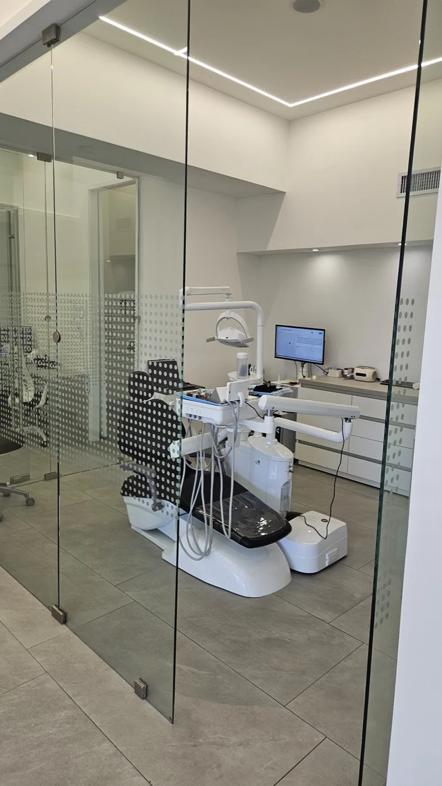

Aclarar el color del esmalte con un procedimiento en consultorio, después de valorar de dónde parte su sonrisa y qué tipo de mancha la está oscureciendo.

El blanqueamiento profesional se basa en agentes a base de peróxido, por lo general peróxido de hidrógeno o de carbamida.
El gel se coloca sobre el esmalte y libera oxígeno, que atraviesa la estructura porosa del diente y rompe las moléculas pigmentadas. Así el diente se percibe más claro.
El procedimiento no añade una capa encima ni desgasta el diente como lo haría un pulido: cambia el color de la estructura que usted ya tiene. De ahí que el resultado tenga un límite natural.
En Andrew Hazbun Specialized Center se realiza en consultorio con el sistema Beyond Polus Ultra, en sesiones de unos 20 minutos.
Una barrera cubre el borde de la encía y se separan labios y mejillas, para que el gel quede solo sobre las piezas dentales.
El gel se extiende sobre la cara visible de los dientes y se activa con la lámpara del equipo, que acelera la liberación de oxígeno.
Al retirar el gel, el resultado se contrasta con la guía de color registrada al inicio. Cuántas aplicaciones lleva la sesión se define en la valoración.
El tono que se alcanza varía de un paciente a otro. Influyen el punto de partida y el tipo de mancha.
Se acumulan sobre la superficie del esmalte y vienen de lo que toca el diente: café, té, vino tinto, refrescos oscuros y tabaco. Parte de ellas se retira ya con la limpieza.
Están dentro de la estructura del diente. Pueden venir del envejecimiento de la pieza, de un golpe, de un tratamiento de conducto previo o de ciertos medicamentos. Responden de forma menos previsible.
En la consulta previa se identifica el tipo de mancha, se registra el tono de partida y se le explica qué esperar.

Cuando el caso lo requiere, la limpieza dental retira placa, sarro y buena parte de las manchas superficiales. Sobre un diente limpio el gel actúa de forma más uniforme.
La revisión busca lo que pospone el procedimiento: caries activas, restauraciones filtradas, encías inflamadas o raíz expuesta. Aplicar peróxido en esas condiciones puede aumentar la molestia y comprometer el resultado.
Si lleva brackets, lo habitual es esperar a que se retiren, porque el gel no alcanza la superficie que queda debajo. Vea las alternativas en ortodoncia.
El peróxido actúa sobre tejido dental, no sobre los materiales artificiales.
Al aclarar los dientes naturales, la diferencia con una restauración de la zona visible puede volverse más evidente.
Por eso lo habitual es blanquear primero y después sustituir la restauración para que iguale al tono nuevo. Se planifica dentro del diseño de sonrisa.
Se percibe como una molestia breve ante el frío o el aire, durante la sesión o en las horas siguientes, y suele ser pasajera.
La hacen más probable la raíz expuesta o el esmalte desgastado. Si es su caso, dígalo en la consulta: el procedimiento se puede ajustar.
Sus dientes siguen expuestos a todo lo que los tiñe. Por lo general se recomienda cuidar más la dieta en los primeros días, cuando el diente resulta más receptivo a los pigmentos.
Con el tiempo puede plantearse un retoque. Puede agendar una cita o ver el resto de tratamientos del centro.
No es permanente. El diente sigue expuesto a los pigmentos de la dieta y del tabaco, y su color natural cambia con la edad, así que el tono se pierde de forma gradual. Cuánto dura depende de sus hábitos.
La sensibilidad es su efecto secundario más frecuente: una molestia breve ante el frío o el aire, durante la sesión o en las horas siguientes, que suele ser pasajera. Si ya tiene sensibilidad o recesión de la encía, coméntelo antes.
Depende de lo que su caso requiera antes y durante el tratamiento, empezando por si hace falta una limpieza. El costo se le explica en la consulta de valoración.
El blanqueamiento con el sistema Beyond Polus Ultra se realiza en sesiones de unos 20 minutos. A ese tiempo se suman la revisión, la protección de la encía y el registro del tono.
El blanqueamiento profesional no desgasta el diente como lo haría un pulido: el peróxido actúa sobre las moléculas que dan color a la estructura dental. Aun así, es un procedimiento que se indica y se supervisa en consulta, porque el estado del esmalte de cada paciente condiciona la concentración y el tiempo de aplicación. El efecto que se observa con más frecuencia es la sensibilidad, y por lo general es pasajera.
Los agentes blanqueadores actúan sobre el tejido dental, no sobre la cerámica, así que la carilla conserva el tono con el que fue fabricada. Si al aclarar los dientes naturales la diferencia se hace evidente, lo que se valora es sustituir la carilla, no blanquearla.
No está indicado para todos. Suele posponerse en menores de edad mientras la dentición se forma, durante el embarazo y la lactancia, y en pacientes con caries activas, enfermedad de las encías o hipersensibilidad marcada, hasta resolver esos cuadros.
Escríbanos por WhatsApp y con gusto le orientamos sobre el tratamiento ideal para usted.
Lunes a viernes de 9:00 a.m. a 6:00 p.m. Sábados con cita previa. Design Center, Torre 1, Nivel 9, Oficina 909, Zona 10.